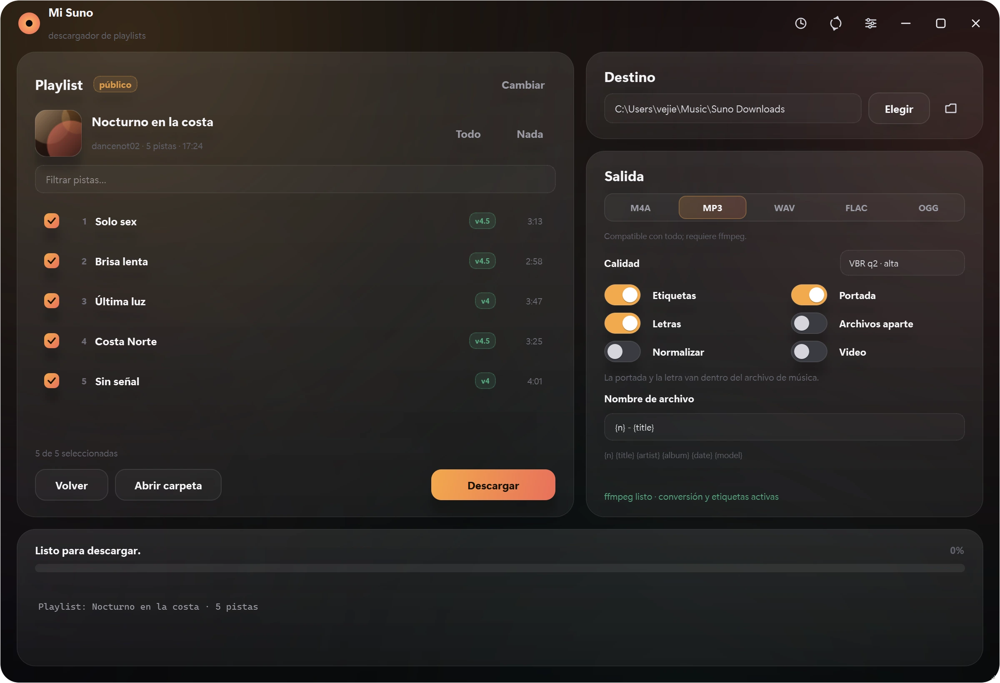

La pista completa, no solo el audio
Cada archivo sale con su carátula incrustada, la letra y las etiquetas de género dentro. La carpeta se queda limpia: solo música.
- Carátula incrustada
- Letra dentro
- ID3 / MP4
- Álbum
- Año
- Género
Windows 10/11 y Android · gratis y sin cuenta
Pega un enlace, elige el formato y listo. Con carátula, letra y etiquetas en cada archivo. En la computadora y ahora también en el teléfono.
Instalador .msi para Windows · .apk para Android · Sin cuenta · Sin anuncios

Windows y Android
Sin cuenta de Suno
Solo playlists públicas
Español
El video
Voz, música y animación hechas para este proyecto. Las capturas son de la app real, en Windows y en Android · versión 1080p (25 MB)
Funciones
Cada archivo sale con su carátula incrustada, la letra y las etiquetas de género dentro. La carpeta se queda limpia: solo música.
MP3 con calidad VBR o CBR, M4A original, WAV, FLAC y OGG.
Vista previa con portada, duración y modelo. Marca solo las pistas que quieres.
Puedes pausar a mitad, reintentar solo lo que falló y continuar sin repetir lo ya descargado.
Pausas humanas, pocas conexiones a la vez y parada inmediata si el servidor pide calma.
Un botón entre el historial y los ajustes. Si hay versión nueva, la baja y abre el instalador. Si no, te lo dice y sigue a lo suyo.
Cómo funciona
Copia la URL de una playlist pública de Suno y pégala en la app. También vale arrastrarla.
MP3, M4A, WAV, FLAC u OGG. Marca las pistas, ajusta carpeta y etiquetas si quieres.
Se guarda ordenado, con portada y letra dentro del propio archivo. La carpeta queda solo con música.
Sin humo
Descargar
1.2.3
Instalador para Windows 10 y 11, 64 bits. Crea el acceso directo en el menú Inicio y en el escritorio, y se desinstala como cualquier programa.
Descargar para Windows≈ 72 MB · .msi · pide permisos de administrador
1.3.6
App nativa para el teléfono. Guarda en Música/Suno v1, así que las canciones aparecen solas en tu reproductor, con portada y letra dentro.
Descargar para Android≈ 1,4 MB · .apk · Android 8 o superior
Android pedirá permitir la instalación desde el navegador: es lo normal en cualquier app fuera de Play Store.
Versiones anteriores · El .apk está firmado con la clave del proyecto: las actualizaciones se instalan encima sin desinstalar.
Licencia
El núcleo de descarga es software libre MIT de zarigata / sudodownloader y conserva su licencia y su autoría. La interfaz, el motor propio, el instalador y esta web son obra del autor de Suno v1. Leer la licencia completa.
Preguntas
No. Solo funciona con playlists públicas, así que no hay que iniciar sesión en ningún sitio.
La app no salta ninguna protección: descarga el mismo audio que sirve el reproductor público. Úsala con contenido propio o con permiso de su autor y respeta los términos de Suno.
Porque se instala en C:\Program Files\Suno v1 y crea accesos para todos los usuarios del equipo, igual que el resto de programas.
Quizá, más adelante, con funciones extra. La versión que descargas hoy seguirá funcionando y esta licencia no cambia para quien ya la tiene.
El motor original sí. Esta interfaz e instalador son de Windows por ahora.